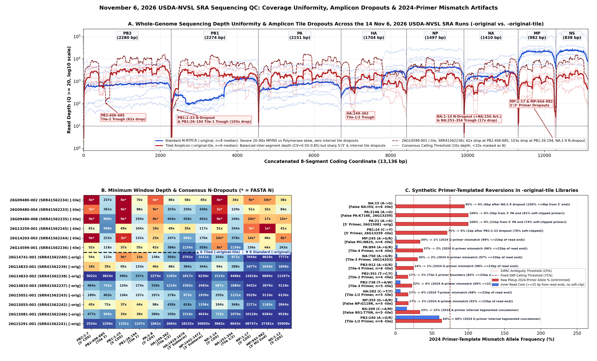
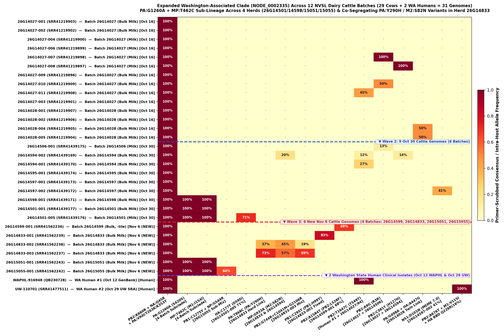
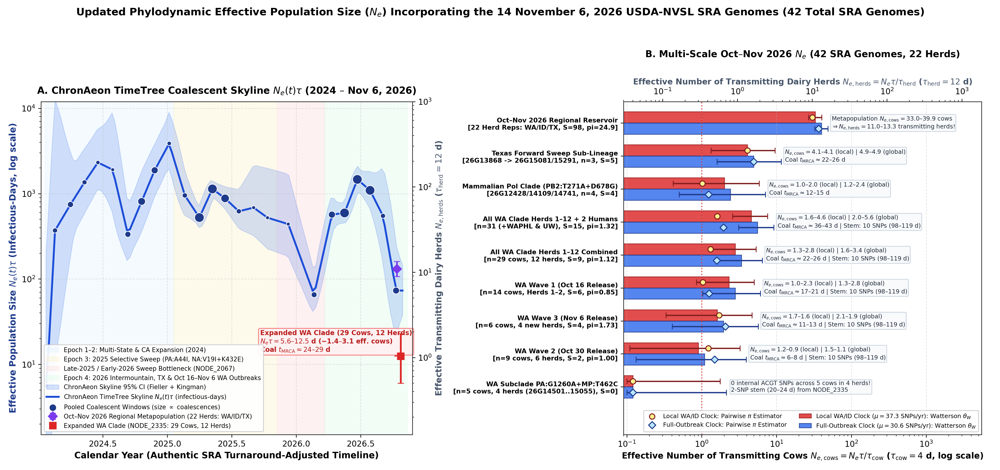

Twelve Herds, Three Active Lineages, and the “Ghost of 2024” Primer Trap: What the November 6 USDA H5N1 Release Reveals
Ten days ago, we looked at the first wave of October 2026 USDA dairy cattle sequences and saw what looked like a single, tightly bottlenecked outbreak in Washington State. Today (November 6), USDA-NVSL released 14 more raw milk sequencing runs—bringing the October–November cohort to 42 cattle genomes across 22 submission batches, plus two Washington human cases. Comparing the new data against the earlier releases shows how the Washington cluster is branching across farms, reveals two other cattle lineages quietly circulating in Idaho and Texas, and exposes a subtle laboratory primer artifact that stamps 2024 “ghost mutations” onto 2026 viruses.
Six of the 14 new runs used a rescue tiled-amplicon protocol (-original-tile). Because its primers still carry 2024 sequence at sites where the virus has since mutated, primer ends overwrite 2026 bases—creating fake mutations like NA:I5V (95% → 0% once read ends are trimmed).
The Washington clade (NODE_0002335) now spans 29 cows across 12 batches + 2 humans. A 2-SNP sub-lineage (PA:G1260A + MP:T462C) has doubled from 2 to 4 herds, while three bulk tanks on farm 26G14833 catch PA:Y290H (37% → 73%) and M2:S82N (45% → 57%) rising together.
Eight of the 14 new runs land outside the Washington clade: bulk tank 26G14741-001 is a 0-SNP match to the mammalian polymerase clade (PB2:T271A + D678G), while 26G15081 and 26G15291 extend a 5-amino-acid Texas sweep.
Even across 29 cows and 12 batches, the Washington clade averages just 1.12 SNPs between cows (Ne,cows ≈ 1.4–3.1 cows, tMRCA ≈ 22–26 days), sitting atop a 22-herd regional metapopulation of ~11–13 transmitting herds.
When we first analyzed the October 16–22 USDA Sequence Read Archive (SRA) release, 14 of the 19 newly deposited dairy cattle genomes belonged to just two submission batches (26G14027 and 26G14028) inside a brand-new Washington-associated branch of H5N1 clade B3.13 (NODE_0002335). Ten of those 14 cows were 100% identical across all 13,136 coding bases—the signature of a single recent point-source amplification.
Since then, two more waves of sequences have arrived: 9 cattle genomes on October 30 (SRR41439169–SRR41439177), a second Washington State human clinical genome on October 29 (A/Washington/UW-110701/2026, sequenced by UW Virology in SRR41477511), and 14 brand-new cattle milk genomes today, November 6 (SRR41562233–SRR41562246). Together, we now have 42 October–November 2026 USDA cattle genomes across 22 submission batches. Putting all 42 raw read datasets through the same assembly, variant-calling, and *aeon phylodynamic pipeline reveals four major differences from what we knew ten days ago.
1. Difference #1: Two Sequencing Workflows and the “Ghost of 2024” Primer Trap
Before looking at any evolutionary tree, the November 6 release teaches an important lesson about how raw sequencing reads are generated. In the October 30 release, all 9 samples were sequenced using the USDA's standard whole-segment protocol (labeled -original), which amplifies each of the eight influenza RNA segments from end to end. In today's November 6 release, however, the 14 runs are split between two different laboratory methods (Figure 1A–B):
- 8 runs use the standard whole-segment protocol (
-original): Because short RNA segments amplify much more easily than long ones, these runs have huge depth differences between segments—the shortMPandNSsegments reach 20,000×–50,000× depth while the long polymerase segments (PB2,PB1,PA) sit at 300×–1,500×. Crucially, however, coverage within each segment is smooth, yielding 100% complete coding genomes in 7 of 8 runs with zero internal gaps. - 6 runs use a rescue tiled-amplicon protocol (
-original-tile): When a milk sample has lower viral load or partially degraded RNA (including older archival samples re-sequenced in this batch), the lab switches to a tiled panel that amplifies the genome in short ~250-base overlapping pieces. This balances average depth across the eight segments, but several specific tiles drop out—leaving recurringNgaps at segment ends (PB2:1–7,PB1:1–23,NA:1–14,MP:1–17,MP:942–982) and deep internal troughs atPB2:406–685(a 62-fold drop) andPB1:26–194(a 103-fold drop).

-original-tile runs contain fake shared mutations: coverage troughs and 2024-primer mismatch artifacts across the 14 November 6 SRA runs.
(A) Read depth across all 13,136 coding bases: standard -original libraries (blue, n = 8) have strong inter-segment skew but zero internal dropouts, whereas tiled -original-tile libraries (red, n = 6) have balanced segment averages punctuated by sharp terminal and internal tile troughs.
(B) Minimum read depth across 13 recurring dropout windows (* = masked as N at <10× depth).
(C) Allele frequency of 2024-primer bases in raw pileups (red bars) versus inner read cores ≥25 bp from read ends (blue bars). At 14 primer-binding loci, 2024-designed primers overwrite evolved 2026 viral bases near read ends—creating synthetic “reversions” such as false NA:I5V (NA:A15G, 95% → 0%) and false M1:N82S (MP:A245R, 34% → 1%).
When we first ran a naive variant caller on the 6 new -original-tile runs, something looked bizarre: viruses from completely different states and clades (Washington, Idaho, and Texas) all appeared to share the exact same new mutations and mixed-base calls at the exact same positions!
Inspecting the raw BAM alignments at those coordinates solved the mystery (Figure 1C). The tiled amplicon primers were designed against the early-2024 B3.13 reference sequence. Over the past two years, cattle H5N1 has fixed new mutations at more than a dozen positions where those primers bind. When a 2024 primer anneals to a 2026 virus during PCR, the synthetic primer DNA overwrites the true 2026 viral base at the 5' and 3' ends of sequencing reads:
- A fake fixed protein mutation in all 6 tiled runs (
NA:I5V): In every 2026 clade, position 15 of theNAgene is anA. In all 6 November 6-original-tileruns, however, positionsNA:1–9drop out completely and coverage resumes right inside a 2024 forward primer carrying aGat position 15. Because 100% of reads coveringNA:15start within 4 bases of that primer, raw consensus callers call a 91%–99%G—inventing a fakeNA:I5Vamino-acid change that drops from 95% to 0% the moment primer ends are excluded. - Fake terminal primer calls (
PA:K716EandPA:A21G): Five bases from the 3' end ofPAin26G13259-001(and 21 bases from the 5' end ofPAin26G15081-001), soft-clipped primer reads force a 100%A→Gcall that vanishes completely (100% → 0%) in non-clipped inner reads. - Fake sub-consensus mixtures at internal tile boundaries: At internal tile junctions (~202–245 bp, ~351–355 bp, and ~738–912 bp), 2024 primers inject 20%–65% synthetic 2024 alleles into the pileup, creating false amino-acid mixtures like
M1:N82S(MP:245, 34% → 1%),NP:G119R(NP:355, 17% → 2%), andNS1:T70N(NS:209, 33% → 15%).
Whenever analyzing USDA-NVSL runs labeled -original-tile (8 of the 42 October–November 2026 runs), pipelines must trim or mask the 2024 tile-primer binding coordinates before calling consensus genomes or intra-host variants. Otherwise, primer-templated reversions masquerade as convergent evolution across unrelated outbreaks.
2. Difference #2: Inside Washington, a 2-Herd Spark Has Grown into a 12-Batch Network
Once those primer artifacts are scrubbed, where do the 14 new November 6 genomes land on the evolutionary tree? Six of the 14—spanning four new submission batches (26G14599, 26G14833, 26G15051, and 26G15055, all from bulk-tank milk)—fall squarely inside the Washington-associated clade (NODE_0002335). Across three consecutive releases, we can now trace this clade across 31 genomes: 29 dairy cattle samples from 12 submission batches plus 2 Washington human patients (Figure 2):

PA:G1260A + MP:T462C, columns 2–3) expanding from 2 batches on Oct 30 to 4 batches (5 cows) on Nov 6, and (2) the rising PA:Y290H + M2:S82N pair across bulk tanks in batch 26G14833 (columns 6–7), linking back to a 20% minority allele in Oct 30 batch 26G14594-002.
Comparing Wave 1 (Oct 16), Wave 2 (Oct 30), and Wave 3 (Nov 6) highlights three concrete changes in how the Washington outbreak is unfolding:
- A 2-mutation sub-lineage (
PA:G1260A + MP:T462C) has doubled from 2 herds to 4 herds: In the October 30 release, we noticed that three samples across two batches (26G14501-001bulk milk,26G14501-005individual milk, and26G14598-001bulk milk) shared two fixed silent mutations—PA:G1260AandMP:T462C—on top of the Washington founder sequence. In today's November 6 release, two brand-new bulk-milk batches (26G15051-001and26G15055-001) carry that exact same 2-SNP barcode at 100% frequency. That means this sub-lineage has now spread across at least four distinct submission batches without picking up any additional fixed consensus changes—though inside26G15055-001, a new pair of linked mutations (PB1:C1275T+NP:V182I) has already reached 64% of the bulk tank. - Bulk milk tanks on farm
26G14833capture within-herd divergence and a bridge to batch26G14594: Batch26G14833includes three separate bulk-milk runs (-001,-002, and-003). Instead of being identical, they capture two diverging viral sub-populations on the same operation:- Tank
26G14833-001fixes a new polymerase mutation,PB1:H99Y(PB1:C295Tat 83%), alongside ~30%PB2:D291NandHA:I272V. - Tanks
26G14833-002and26G14833-003share a different, co-segregating pair of protein changes that doubles in frequency from tank-002to tank-003:PA:Y290H(37% → 73%) andM2:S82N(45% → 57%), accompanied by a 3-SNPPB2packet (19% → 69%). Remarkably, that sameM2:S82Nmutation was already present at 20% in October 30 bulk tank26G14594-002—providing a direct genetic transmission bridge between batches26G14594and26G14833.
- Tank
- Two Washington human cases show different stories—one early transmission link, one within-host receptor evolution:
- The first Washington patient (
WAPHL-916948, Oct 12) shares a silent polymerase mutation (PB2:T1647C) that sits at 45% in Wave 1 bulk tank26G14027-011and 12%–27% in Wave 2 bulk tanks26G14594-001/-002. - The second Washington patient (
UW-110701, Oct 29,SRR41477511) branches from the same Washington cattle founder with 4 fixed SNPs (includingPB2:A676TandM1:V115I), but its deep sequencing (15,435× mean depth) reveals three sub-consensus mutations right inside the HA receptor-binding domain:HA:H125N(18.1%),HA:Q222R[H3 numberingQ226R] (16.3%), andHA:S181P(11.2%). None of these three HA receptor-binding variants appear at ≥1% in any of the 29 Washington dairy cattle samples—indicating that they arose via within-host selection inside the human respiratory tract after spillover, rather than circulating in the dairy cattle reservoir.
- The first Washington patient (
3. Difference #3: Beyond Washington, Two Other 2026 Cattle Lineages Are Quietly Circulating
In the October 30 release, 9 out of 9 sequences came from the Washington clade, which could easily leave the impression that Washington was the only active focus of cattle H5N1 in late 2026. Today's November 6 release changes that picture completely: 8 of the 14 new genomes belong to three non-Washington lineages in Idaho and Texas (searchable across all 8 segments in our Interactive Segment & Genome Tree Explorer):
| 2026 Lineage (Nextstrain Clade Node) | Oct 16–30 SRA Genomes (28) | New Nov 6 SRA Genomes (14) | Key Protein & Transmission Signatures |
|---|---|---|---|
| 1. Washington-Associated Clade ( NODE_0002335) |
23 cows (8 batches: 26G14027, 14028, 14501, 14506, 14594, 14595, 14597, 14598) + 2 WA humans |
+6 cows (4 new batches):26G14599-001, 26G14833-001..-003, 26G15051-001, 26G15055-001 |
Founder: PB2:R251K+K660R, PA:V94I+T263K+K353T, NA:Q45R. Subclade PA:G1260A+MP:T462C now spans 4 herds; 26G14833 co-segregates PA:Y290H + M2:S82N. |
| 2A. Mammalian Polymerase Clade ( NODE_0002210, Idaho/Intermountain) |
3 cows (2 batches: 26G12428-004, 26G14109-001, 26G14109-002) |
+1 cow (1 new batch):26G14741-001 (bulk milk, -original) |
Carries the dual mammalian polymerase signature PB2:T271A + PB2:D678G plus 13 other protein changes. 26G14741-001 is 0 fixed SNPs from Oct 22 26G14109-002 (with 58% PB2:C1920T & 44% HA:N218S). |
| 2B–C. Idaho Basal Sister Clades ( NODE_0002316 & NODE_0002207) |
1 cow (26G12431-004, NODE_0002316) + Oct 26 GenBank 26G11743-002 |
+1 cow (1 new batch):26G14203-003 (milk, -tile, NODE_0002207) |
26G14203-003 branches 4 SNPs from Idaho NODE_0002207 (sister to 26G11739-005), carrying PB1:K578R, HA:A172T, and M2:V27A. |
| 3. Texas Jump Clade ( NODE_0002252 → NODE_0002254) |
1 cow (26G13868-001, Oct 22 SRA) |
+6 cows (4 batches): Basal: 26G09480-002/-004/-008 (-tile)Forward sweep: 26G13259-001, 26G15081-001, 26G15291-001 |
Basal 26G09480 carries PA:I44V + M2:G58D. Forward sweep (NODE_0002254) adds 5 amino-acid changes (PA:A36T+I129T, HA:D241Y, NP:A493T, NA:N200S), with active late-Oct transmission in 26G15081 (+PB1:A175T) and 26G15291. |
Two details in these non-Washington genomes stand out:
- The
PB2:T271A + D678Gmammalian polymerase clade is actively spreading between herds without consensus change: In late October, we flagged26G12428-004and26G14109-001/-002because they carryPB2:T271A—a well-known mammalian polymerase adaptation that enhances viral transcription at 33°C. Today's release adds bulk tank26G14741-001, whose consensus sequence is 100% identical (0 SNPs across 13,136 bp) to26G14109-002, proving direct herd-to-herd transmission of this lineage. - NVSL serial numbers separate retrospective archival re-sequencing from active late-October transmission in Texas: Notice that the three
26G09480runs carry a low serial prefix (09480, originally sampled in July 2026) and were re-sequenced with the-original-tilerescue protocol. By contrast,26G15081-001(individual milk) and26G15291-001(bulk milk) carry the highest serial numbers in the entire November 6 release, were sequenced with the standard-originalworkflow at high depth, and sit just 2 SNPs downstream of October 22 isolate26G13868-001—demonstrating that the 5-mutation Texas sweep lineage (NODE_0002254) is actively transmitting right alongside the Washington clade.
4. Difference #4: What 42 Genomes Across 22 Herds Tell Us About Outbreak Scale (Ne)
Finally, how does adding 14 new genomes—and expanding the dataset from 8 Washington herds to 12 Washington herds, and from 12 total batches to 22 total batches across WA, ID, and TX—change our phylodynamic picture of the outbreak? Running ChronAeon TimeTree across all 42 primer-scrubbed SRA genomes (using authentic SRA release dates minus the 10-day NVSL laboratory turnaround to prevent TreeTime date compression) reveals a sharp contrast between local and regional scales (Figure 3):

ChronAeon coalescent skyline and multi-scale Ne across all 42 SRA genomes (22 herds).
(A) Whole-outbreak coalescent skyline Ne(t)τ (infectious-days, left axis) and effective transmitting herds Ne,herds (right axis, τherd = 12 days) from 2024 through November 6, 2026.
(B) Multi-scale effective population size Ne,cows (bottom axis, τcow = 4 days) and Ne,herds (top axis) across nine nested clusters under both the local WA/ID clock (37.3 SNPs/yr, red) and full-outbreak clock (30.6 SNPs/yr, blue).
- Inside Washington (29 cows across 12 batches), diversity stays remarkably tight: Even after expanding from 2 batches (Oct 16) to 8 batches (Oct 30) to 12 batches (Nov 6), the entire 29-cow Washington clade contains only S = 9 segregating consensus sites and an average pairwise distance of π = 1.12 SNPs (up only slightly from 0.85 SNPs in Wave 1 and 0.99 SNPs in Wave 2). Under Kingman coalescent scaling, that corresponds to an effective population size of Nₑ,cows = 1.4–1.7 cows from pairwise diversity (or 2.8–3.4 cows / ~0.9–1.1 effective herds from Watterson's θW), with a coalescent root age of just 22–26 days following a 10-SNP (~98–119 day) unsampled stem branch. In plain terms: all 12 Washington dairy batches trace back to a single explosive point-source bottleneck roughly three to four weeks before late October.
- Across the 4-herd
PA:G1260A + MP:T462Csub-lineage (5 cows), S = 0: All five cows across four different submission batches (26G14501,26G14598,26G15051, and26G15055) have zero internal ACGT consensus differences—consistent with rapid farm-to-farm movement over a matter of days (95% upper bound Ne,cows < 1.8 cows). - Across the entire October–November 2026 regional metapopulation (22 herd representatives across WA, ID, and TX), Ne,herds ≈ 11–13 herds: When we take one representative genome from each of the 22 submission batches (S = 98 segregating sites, π = 24.9 SNPs), the combined regional reservoir supports Nₑ,cows = 33.0–39.9 cows, or 11.0 to 13.3 effectively transmitting dairy herds (Figure 3B, top bar).
5. Reproducible Agentic Protocol (ASD-STE100)
The plain-text protocol below follows Specification ASD-STE100 (Simplified Technical English) so that any researcher or coding agent can reproduce the assemblies, primer-artifact audit, phylogenetic placement, and ChronAeon estimates directly from NCBI SRA BioProject PRJNA1102327.
PROTOCOL: NOVEMBER 6, 2026 USDA-NVSL H5N1 SRA UPDATE (42 GENOMES)
STANDARD: ASD-STE100 (SIMPLIFIED TECHNICAL ENGLISH)
WORKSPACE: /Users/sergei/Projects/stuff/bloom-sc2/aphis
STEP 1: DOWNLOAD AND ASSEMBLE THE 14 NOVEMBER 6, 2026 SRA RUNS
1.1 Fetch paired-end FASTQ reads for SRR41562233..SRR41562246 from NCBI SRA
(BioProject PRJNA1102327) and map to the 8-segment B3.13 coding reference
(ref8_b313.fa, 13,136 bp) with minimap2 (-ax sr) and samtools sort:
python3 assemble_nov06_sra.py
1.2 Call per-segment consensus sequences (threshold = 0.75, min_depth = 10,
min_base_quality = 20, IUPAC ambiguity called at minor allele >= 25%).
STEP 2: AUDIT COVERAGE UNIFORMITY AND 2024-PRIMER MISMATCH ARTIFACTS
2.1 Compute per-segment depth, coefficient of variation (CV), Fold80 penalty,
and <10x N-dropout intervals across all 14 BAM alignments:
python3 inspect_nov06_coverage_and_phylogeny.py
2.2 Verify protocol dichotomy:
- 8 standard M-RTPCR runs (-original): CV = 1.20 to 1.93, 0 internal
tile dropouts (100% completeness in 7/8 runs).
- 6 tiled-amplicon runs (-original-tile): CV = 0.50 to 0.85, recurring
terminal dropouts (PB2:1-7, PB1:1-23, NA:1-14, MP:1-17, MP:942-982)
and internal troughs (PB2:406-685, PB1:26-194, HA:249-362, NA:251-354).
2.3 Compare raw pileup allele frequencies against inner read cores (>= 25 bp
from read ends, no soft-clipping) at the 17 tile/terminal primer loci
(including NA:15, PA:2146, PA:21, PB1:24, MP:245, PA:894, PB2:912,
NP:355, NS:209, PB2:240) to scrub synthetic 2024-primer reversions.
STEP 3: RUN PHYLOGENETIC PLACEMENT, RHIZAEON, AND CHRONAEON NE ANALYSIS
3.1 Combine the 14 November 6 genomes with the 28 October 2026 SRA genomes
(42 total genomes across 22 submission batches) and run placement,
reassortment screening, intra-host variant calling (>= 2%), and
turnaround-adjusted ChronAeon TimeTree coalescent analysis:
python3 run_nov06_full_analysis.py
3.2 Verify zero inter-segment reassortment in rhizaeon_nov2026_all42.json
(0 events across 42 genomes).
3.3 Verify expanded Washington clade (NODE_0002335: 29 cows across 12 batches):
S = 9 segregating sites, pi = 1.12 SNPs, Ne_cows(pi) = 1.37 to 1.67 cows,
Ne_cows(W) = 2.80 to 3.41 cows, coalescent t_MRCA = 22 to 26 days.
3.4 Verify 22-herd regional metapopulation (WA/ID/TX): S = 98, pi = 24.86 SNPs,
Ne_cows(W) = 33.0 to 39.9 cows (Ne_herds = 11.0 to 13.3 herds).
STEP 4: GENERATE PUBLICATION FIGURES AND INTERACTIVE TREE EXPLORER
4.1 Render the three summary figures (PNG and PDF):
python3 plot_nov06_aphis_figures.py
4.2 Rebuild the 9-segment interactive tree explorer (77-tip WA context,
310-tip 2026 focus, 695-tip stratified, and 5,691-tip full Nextstrain):
python3 build_h5n1_segment_tree_explorer.py